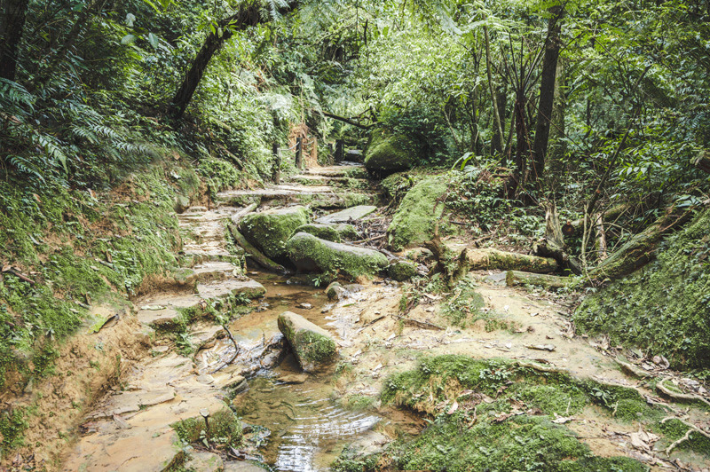
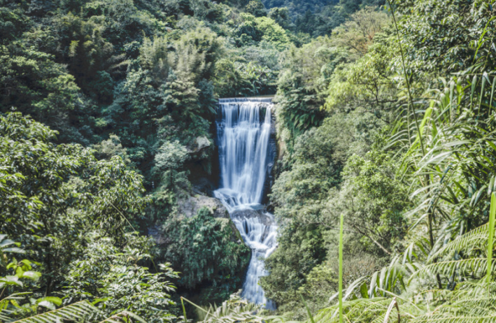

三貂嶺隧道
瑞芳站至雙溪站共有9座舊隧道，故衍生「一錢
鑽九孔」台語俗諺，其中4座舊隧道已闢有自行
車道。將舊時宜蘭線鐵路隧道，歷經30年荒廢的
重新「打開」後的三貂嶺生態友善隧道總長3.19
公里，建造出全台第一條「鋼筋自行車道」。
設計師利用水池設計讓洞口從黑到亮，與三貂嶺
翠綠山色相印成讓人驚艷的鏡面反射倒影，有機
會還能與火車相遇，考量從隧道至壁掛棧橋雙向
通行安全，自行車須採步行牽引方式通行。
注意事項：
本場域採網路預約申請，報到後才能入場參觀，營
運期間無收取任何費用。
每週星期一為固定公休日；另因其它因素經公告停
止上班、上課依規定不開放入場。
詳細資訊與預約網址：
青春山海線三貂嶺生態隧道

三貂嶺步道
登山步道起點在三貂嶺的碩仁國小門口，
健行時間約需1小時15分，曾是「新北市
登山節」主場登山活動的所在，四周蓊鬱
山林環抱，美景令人流連忘返！
由於難度不高、路徑多變，成為新
北市熱門的登山路線之一，沿途不
只有步道，也有吊橋和攀岩繩索，
更加有趣和挑戰性!
陡峭的岩壁，令人看了膽顫心驚，不
過爬起來確實也很刺激好玩，喜歡挑
戰的人可以去嘗試看看!
【推薦路線】碩仁國小→合谷瀑布觀瀑台→繩索吊橋→摩天瀑布→枇杷洞瀑布→步道終點(折返)
三貂嶺瀑布群觀瀑台
合谷瀑布
乍看之下與十分瀑布有點相似，都是
屬於簾幕式瀑布，垂直落下的樣子宛
如掛上一條條白色薄紗，流淌在碧綠
的山巒裡。
摩天瀑布
猴硐貓村各個角落都有一些可愛的公仔
及壁畫，非常適合拍照留影，是親子遊
憩的好地方。
枇杷洞瀑布
約有十三樓層高的摩天瀑布，流水因從
高處濺起的水花所產生的水花，彷彿綿
綿細雨一般，令人感覺非常沁涼。